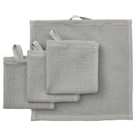

| Name |
Weight/Volume |
Description |
Ingredients |
Image |
| Dental Floss |
20 grams |
Dental floss is made of thin filaments, usually twisted together. Dental floss has falovers, it sometimes mint or other flavors. Dental floss can be waxed and unwaxed, waxed floss helps it glide smoothly between teeth while unwaxed is effective at removing plaque. |
Nylon, Silk, Wax, Flavorings, Fluoride, Antibacterial Agents. |
 |
| Deodorant |
Stick Deodorant: 1.5 to 2.6 ounces
Roll-on Deodorant: 2.5 to 3 ounces
Aerosol Deodorant: 4 to 6 ounces |
Deodorants comes to various forms (stick, roll-on, and aerosol). Deodorant is used to prevent or mask body odor, it is also used for personal hygiene. Its a sweat reduction, odor neutralizaztion, its also use for social etiquette and confident boost and also specific need. |
Aluminum Salts, Frgrances, Antibacterial Agents, Moisturizers, Alcohol, and Other Ingredients. |
|
| Facial Cleanser |
Small Bottles: 2-4 ounces
Large Bottles: 6-8 ounces
Professional Sizes: 16 ounces or more |
Cleanser is used for skin specially face. Facial cleanser comes on different form and it alos has their own benefits such as gel cleanser, cream cleanser, foaming cleanser, oil cleanser and micellar cleanser. This cleansers has its own purpose, for oily or acne-prone skin (gel cleansers), for dry and senstive (cream cleansers), cleansers that lift dirt and oil from skin(foaming cleansers), for removing make up(oil cleansers), and cleansers that remove make up and impurities without rinsing (micellar cleansers). It helps to improved skin. |
Surfactants, Humectants, Exfolliants, Antioxidants, Anti-flammatory Agents, and Fragnances. |
 |
| Mouthwash |
Small Bottles:4-8 ounces
Larger Bottles:16-32 ounces
Professional Sizes: larger than 32 ounces |
Mouthwas is also known as mouth rinse or oral rinse, its a liquid solution to clean mouth and improve hygiene. It can be used wherever you are, and don't have time to toothbrush. It helps to freshen up your breath, it can also help to reduce plaque, prevent gingivitis and cavity. |
Water, Glycerin, Alcohol(Ethanol), Flavoring Agents (mint, cinnamon), Sweeteners (sucralose, saccharin), Preservatives (sodium benzoate), Coloring Agents, Antimicrobial Agents, Fluoride, Essential Oils. |
|
| Electric Razor |
204 grams |
There types of razor:foil and rotary. For sensitive skin you can used the foil shavers and faster and better shaving larger areas you can used the rotary shavers. You can use the Electronics razor in wet/dry, it is also rechargeable. |
Metal, PLastics, Rubber/Silicone, Electronic Components |
|
| Soap |
3-5 ounces (84-140 grams) |
Soap is used for wash and bath. Its produced by reacting fats/oils with strong alkali, such as lye (sodium hydroxied) or Potash (Potassium hydroxide). The process of making soap is called saponification. |
Fats or Oils, Alkali, Water, and for additives: Fragnances, Colorants, Moisturizers, Antibacterials, Exfolliants. |
|
| Tissue Paper |
10-15 grams |
Tissue paper is made of wood pulp, a sodt and fibrous material. Woods chips are treated with chemicals (pulping), the pulp is bleach to remove impurities, then refined, papermarking and lastly drying. Tissue is used for everydaylife especiallu restaurants. |
Wet strength agents, Softeners, Anti-static agents, Biocides, Dyes and pigments. |
|
| Toothbrush |
10-20 grams |
Toothbrush is part of people's hygiene because it is used to freshen up our breathes and remove plaques in our teeth. Toothbrush is consist of handle and head. The handle is made of plastic, metal or bambooo. |
Handle: Plastic, Metal, Bamboo,
Bristles: Nylon, Synthetic fibers
Other Components: Rubber, Metal, Electronics. |
|
| Toothpaste |
3.4 ounces and 6 ounces |
Toothpaste is a partner of our toothbrush, its paste that comes with various forms. It has vital role in our health, to maintin our oral health. We can chose toothpaste that we want. |
Abrasives: Silica, Calcium carbonate, Baking Soda
Fluoride: Sodium Fluoride, Stannous Fluoride
Detergent: SLS, SLES
Moisturizer: Glycerin
Flavoring Agents: Mint and Cinnamon Extracts
Colorants: Titanium dioxides and Iron oxides
Preservatives: Parabens and Sorbic Acid |
|
| Wash Cloth |
8-12pounds |
Washing clothes is used for cleaning. Using water and detergent we can used it for cleaning places or things such as tables, chairs, etc. Wash clothes is essential for everyday used because it can keeps our place clean and neat. |
Cotton, Microfiber, Bamboo, Antibacterial agents, Softeners, Dyes, Patterns |
 |